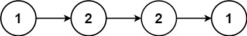
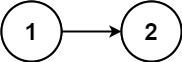

234. 回文链表
本题学习状态正在读取学习记录…下次复习：—
按 M 快速切换薄弱标记题目与约束
给你一个单链表的头节点 head ，请你判断该链表是否为回文链表。如果是，返回 true ；否则，返回 false 。
示例 1：

输入：head = [1,2,2,1]
输出：true
示例 2：

输入：head = [1,2]
输出：false
提示：
- 链表中节点数目在范围
[1, 105]内 0 <= Node.val <= 9
进阶：你能否用 O(n) 时间复杂度和 O(1) 空间复杂度解决此题？
核心不变量
只比较等长的两半，结束后恢复链表更稳妥。
完整推导
思路推导
-
直觉与痛点（数组拷贝法）：
最简单的办法是把链表遍历一遍，把所有的值复制到一个数组（或
ArrayList）里，然后再用双指针从数组两头往中间核对。痛点：开辟了新数组，空间复杂度是 O(N)，面试官会直接让你优化。
-
破局思路（改变链表结构：后半部分反转）：
既然是回文，说明前半部分和后半部分（反转后）是一模一样的。
因为我们不能开辟新空间，所以我们干脆直接在原链表上动刀子：
- 第一步：找中点。用“快慢指针”，快指针一次走两步，慢指针一次走一步。快指针走到底时，慢指针刚好停在中间。
- 第二步：反转后半部分。调用我们之前写过的“反转链表”函数，把慢指针后面的链表反转过来。
- 第三步：比对。一个指针从车头发车，一个指针从车尾发车，一步步比对值是否相等。
- (加分项) 第四步：恢复链表。比对完之后，再把后半部分反转回来，拼接好。
-
逻辑推演（以
1 -> 2 -> 3 -> 2 -> 1为例）：-
找中点：快慢指针出发。快指针走到最后的
1时，慢指针刚好停在3上。 -
反转：把
3后面的2 -> 1反转，变成1 -> 2。此时链表的物理形态变成了：左边是1 -> 2 -> 3，右边是1 -> 2 -> null（反转后的头节点是最后的 1）。 -
比对：
p1在最左边的1，p2在最右边的1。相等，都往中间走一步。p1到2，p2到2。相等。p2走向null，比对结束。完全一致，是回文！Java 实现（满分版）
C++ 实现
实现来源：代码随想录（programmercarl.com）
class Solution { public: bool isPalindrome(ListNode* head) { vector<int> vec; ListNode* cur = head; while (cur) { vec.push_back(cur->val); cur = cur->next; } // 比较数组回文 for (int i = 0, j = vec.size() - 1; i < j; i++, j--) { if (vec[i] != vec[j]) return false; } return true; } };Python 实现
实现来源：代码随想录（programmercarl.com）
#数组模拟 class Solution: def isPalindrome(self, head: Optional[ListNode]) -> bool: list=[] while head: list.append(head.val) head=head.next l,r=0, len(list)-1 while l<=r: if list[l]!=list[r]: return False l+=1 r-=1 return TrueGo 实现
实现来源：代码随想录（programmercarl.com）
/** * Definition for singly-linked list. * type ListNode struct { * Val int * Next *ListNode * } */ //方法一，使用数组 func isPalindrome(head *ListNode) bool{ //计算切片长度，避免切片频繁扩容 cur,ln:=head,0 for cur!=nil{ ln++ cur=cur.Next } nums:=make([]int,ln) index:=0 for head!=nil{ nums[index]=head.Val index++ head=head.Next } //比较回文切片 for i,j:=0,ln-1;i<=j;i,j=i+1,j-1{ if nums[i]!=nums[j]{return false} } return true } -
/**
* Definition for singly-linked list.
* public class ListNode {
* int val;
* ListNode next;
* ListNode() {}
* ListNode(int val) { this.val = val; }
* ListNode(int val, ListNode next) { this.val = val; this.next = next; }
* }
*/
class Solution {
public boolean isPalindrome(ListNode head) {
if (head == null || head.next == null) return true;
// 1. 使用快慢指针找到链表的中点
// 注意初始化：为了让偶数个节点时 slow 停在前半部分的最后一个，
// fast 最好从 head 初始化，判定条件写 fast.next 和 fast.next.next
ListNode slow = head;
ListNode fast = head;
while (fast.next != null && fast.next.next != null) {
slow = slow.next;
fast = fast.next.next;
}
// 2. 反转后半部分链表
// slow.next 是后半部分的开始节点
ListNode secondHalfHead = reverseList(slow.next);
// 3. 双指针进行比对
ListNode p1 = head;
ListNode p2 = secondHalfHead;
boolean isPalindrome = true;
while (isPalindrome && p2 != null) {
if (p1.val != p2.val) {
isPalindrome = false;
}
p1 = p1.next;
p2 = p2.next;
}
// 4. 【高阶工程素养】恢复链表原状
slow.next = reverseList(secondHalfHead);
return isPalindrome;
}
// 辅助函数：标准的“反转链表”代码
private ListNode reverseList(ListNode head) {
ListNode prev = null;
ListNode curr = head;
while (curr != null) {
ListNode nextTemp = curr.next;
curr.next = prev;
prev = curr;
curr = nextTemp;
}
return prev;
}
}
复杂度
- 时间复杂度：O(N)。找中点用了 N/2 步，反转后半部分用了 N/2 步，比对用了 N/2 步，恢复链表用了 N/2 步。常数项无论怎么加，总体还是 O(N)。
- 空间复杂度：O(1)。我们仅仅通过改变指针的指向完成了所有操作，没有开辟任何新的节点或数组空间。
易错点与扩展（你一定会踩的坑）
- 奇偶数长度的坑点：
- 奇数长度（如 1-2-3-2-1）：
slow停在 3，我们反转 3 后面的2-1。 - 偶数长度（如 1-2-2-1）：slow停在左边的 2，我们反转它后面的2-1。 - 防御指南：这就是为什么我在找中点时，while条件写的是fast.next != null && fast.next.next != null。这种写法能完美统一奇偶数的处理逻辑，确保slow永远停在我们想要切割的左侧断点上。 - 工程素养加分项：
- 面试官经常会问：“你在并发环境下直接修改输入的链表结构，会有什么隐患？”
- 你就可以自信地回答：“在多线程下这确实不是线程安全的。但在单线程的函数式设计中，我特意在第 4 步执行了
slow.next = reverseList(secondHalfHead);。即使中途链表结构被破坏，我在返回结果前也将它无损还原了，不会给调用方留下一个断裂的脏数据链表。”（说出这段话，面试官大概率直接给 Pass）。